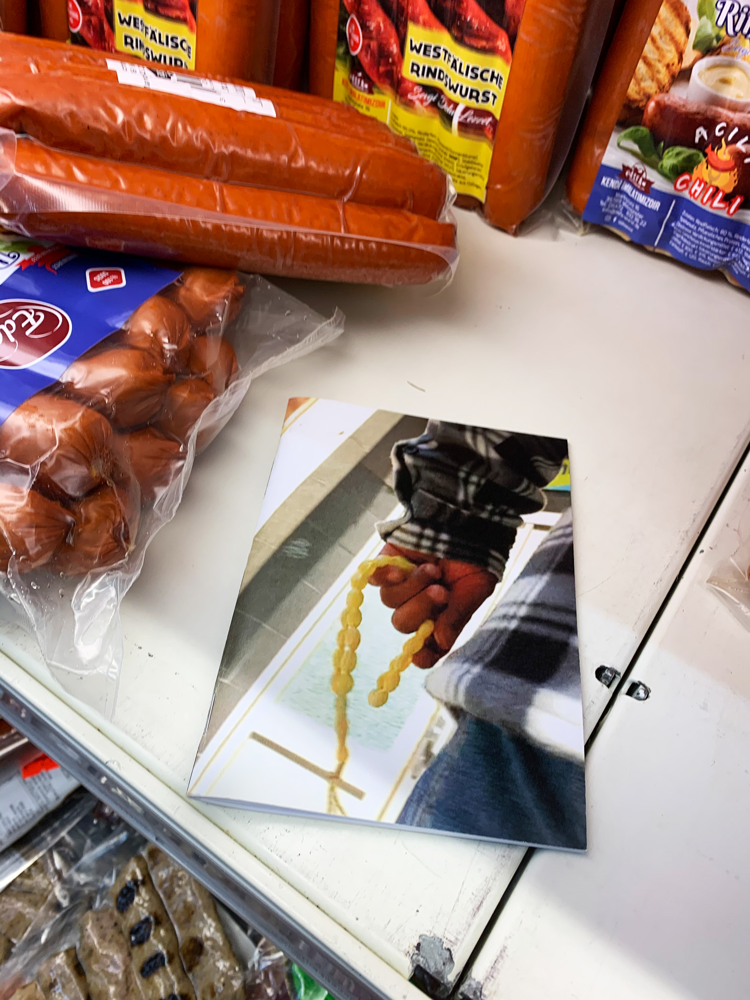
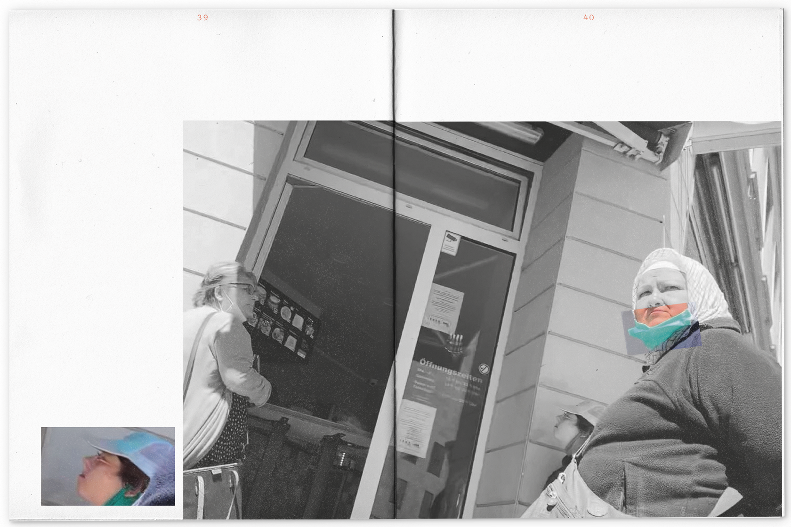
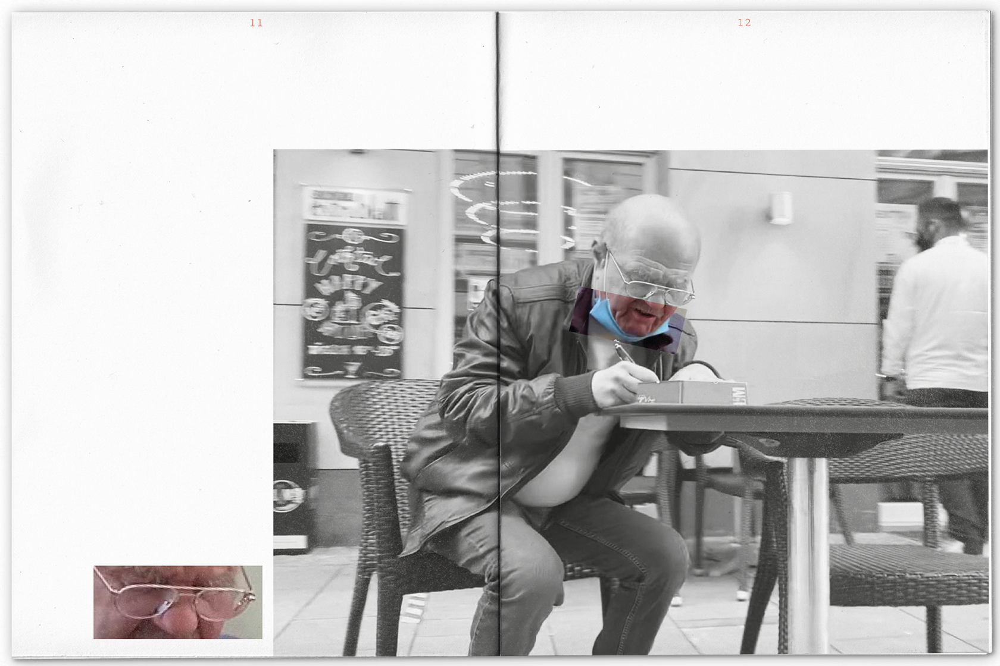
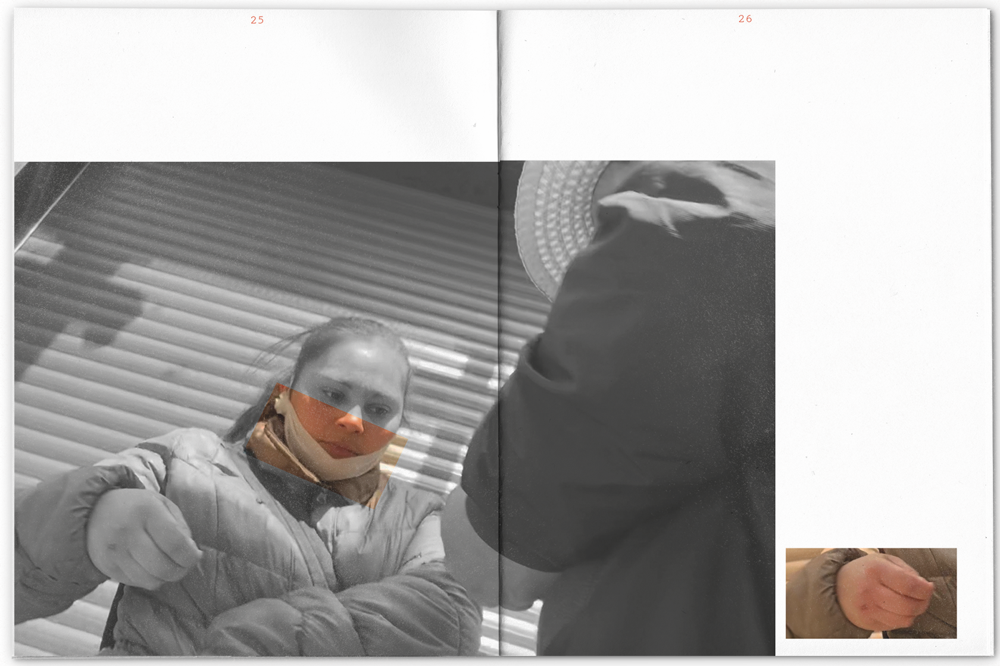
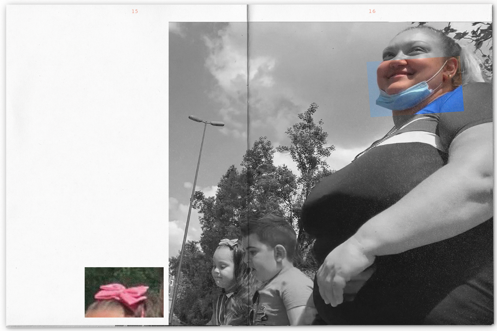
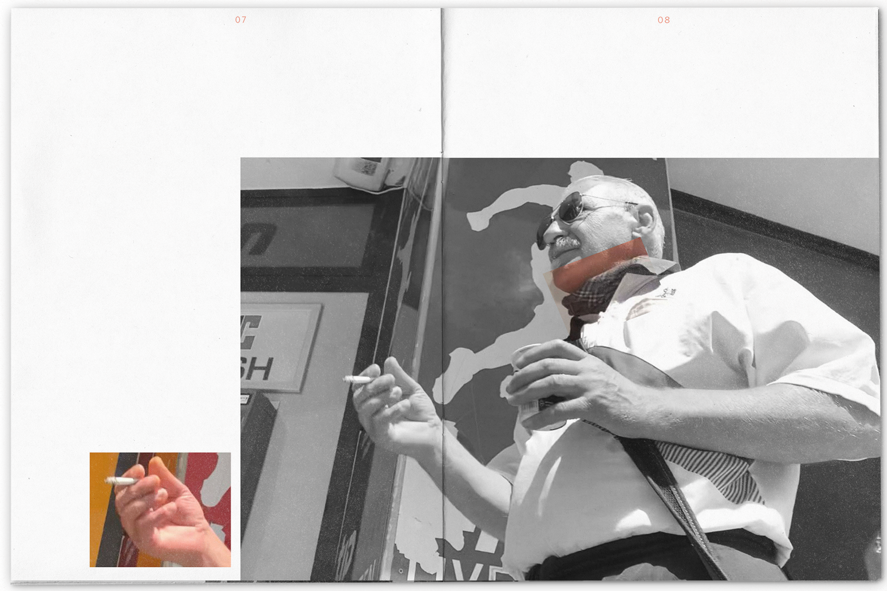
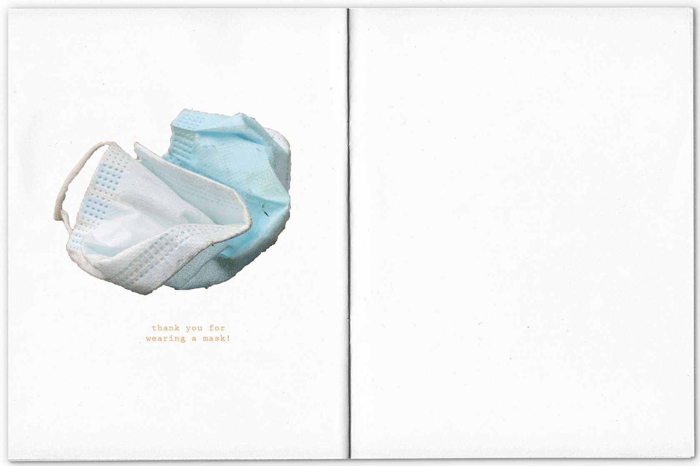

Long-lasting Trend
2020
Photography
Cora Trinkhaus
Wiesbaden‘s lively multicultural district Westend became the stage for my photography series for the publication Long-lasting trend, an unfiltered documentation of masked strangers. Equip-ped with my camera, I explored the streets of the neighbourhood during shutdown in the summer of 2020 and took pictures of people from a hidden position. The photographs show a collection of various mask models and the unfiltered mood of the passers-by.